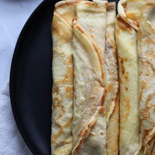

panqueques con manjar
Ingredientes
- 1 taza de harina cernida
- 3 huevos
- 1 taza de leche
- manjar
Preparacion
- Batir los 3 huevos enteros, luego agregar la taza de leche y finalmente la harina cernida. Revolver hasta que no quede ningún grumo de harina.
- Calentar el sartén con una gota de aceite. Echar de cucharadas. Se puede utilizar el cucharón y una porción de este estaría bien por porción. Una vez que se despeguen las orillas voltear el panqueque, para cocinarlo por el otro lado, esto dura un minuto apróximadamente.
- Retirar el panqueque del sartén, luego extender el panqueque en un plato y rellenarlo con suficiente manjar y enrollar.